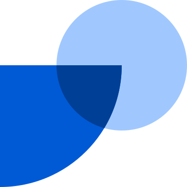

Tinkering
Independent
Jun – Aug 2026 · 2 months
I built an iOS app for planning and managing social media posts. I also made a conversational interviews prototype, where you have an AI talk to a person instead of sending a survey.
Gonzalo Enei
Work
Tinkering
Independent
Jun – Aug 2026 · 2 months
I built an iOS app for planning and managing social media posts. I also made a conversational interviews prototype, where you have an AI talk to a person instead of sending a survey.
Co-Founder & CEO
Faces · Full-time
Jan 2023 – May 2026 · 3 yrs 5 mos
Co-founded and led Faces, presentations where every slide is as dynamic as the web, generated by AI. Launched in Feb 2026, close to 100k signups. We also shipped several experimental products: an LLM-product prototyping canvas, autonomous workers, an AI-native workspace, and a Chrome extension that generated new interfaces on top of web pages. Hi Ventures and Bessemer are backers. My co-founders run it today.
Head of Growth & VP of Product

Fintual · Full-timeMar 2019 – Jan 2023 · 3 yrs 11 mos
I was employee No.11 at Fintual, which makes investing easy for people in LatAm. We grew from $10M to $650M in assets under management in four years. By the end I was leading a team of 80+. Sequoia-backed. Fintual’s founders later invested in Faces.
Co-founder & CEO
El Vaso Medio Lleno
Jun 2014 – Mar 2017 · 2 yrs 10 mos
El Vaso Medio Lleno was a digital media startup that focused on positive content and got 23M monthly content views cross-platform.
Education
Humanities, Law, Entrepreneurship
Pontificia Universidad Católica de Chile
2006 – 2012
LatAm’s #1 University. Graduated magna cum laude.
Full Stack Web Development
Le Wagon
2021 – 2021
Other
Published behavioral research in the Academy of Management Proceedings, 2023.
I grew up in Tokyo and Santiago. Now in the Bay Area. I hold a green card as an alien of extraordinary ability.
Tools
Claude Code, Cursor, Figma, Flora AI, Notion, Raycast
Email: gonzalo@gonzaloenei.com
Bio: gonzaloenei.com